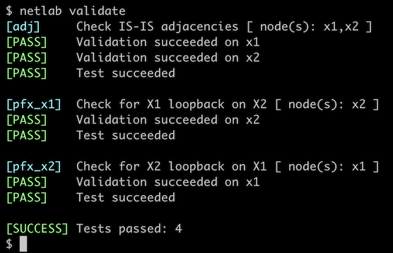

Configure IS-IS Routing for IPv4
We’ll start with the simplest possible scenario: we’re adding a new router to an existing IS-IS network and have to configure IS-IS routing on it.

Device Requirements
- Use any netlab-supported device for the router you’ll be configuring.
- Use a device supported by the netlab IS-IS configuration module for X1 and X2 (default: FRRouting virtual machines or containers).
- You can do automated lab validation when using FRRouting on the external routers.
Starting the Lab
Assuming you already set up your lab infrastructure:
- Change directory to
basic/1-simple-ipv4 - Execute netlab up
- Log into your device (RTR) with netlab connect rtr and verify that the IP addresses are configured on all its interfaces.
Configuration Tasks
The minimal IS-IS configuration process has three or four steps:
- Start an IS-IS routing process with a global configuration command similar to router is-is. You might have to specify a routing process tag – usually a meaningless string, considering that many network devices can’t run more than one IS-IS instance.
- Assign a CLNS address (NET – Network Entity Title) to the IS-IS routing process with a routing configuration command similar to net address (more details). The NET assigned to your router is
49.0001.0000.0000.0042.00 - Some devices want you to configure which address families (IPv4 or IPv6) you want to route with IS-IS. The router configuration command to do that is often address-family ipv4.
- Enable IS-IS routing for IPv4 on individual interfaces with an interface configuration command similar to ip router isis tag or isis enable tag.
Tip
If you’re using FRRouting on RTR, you might have to enable the IS-IS daemon first. You’ll find more details in the Configuring IS-IS on FRRouting lab.
Unfortunately, most IS-IS implementations are ancient and use defaults that might have made sense decades ago. You should also configure the following parameters1:
- Configure the links with two nodes attached to them as point-to-point links with an interface configuration command similar to isis network point-to-point.
- Configure your router to be a Level-2-Only router with the router configuration command similar to is-type level-2-only.
Finally, make sure your configuration includes these settings:
- Logging of adjacency changes (typically configured with a router configuration command like log-adjacency-changes)
- Dynamic mapping of NETs to hostnames (usually enabled; sometimes you can’t turn it off)
Validation
You can use the netlab validate command if you’re using netlab release 1.8.4 or later and run FRRouting on the external routers. This is the printout you should get after completing the lab exercise:

You should also do basic validation on your device:
- Inspect IS-IS adjacencies with a command similar to show isis neighbors. Your router should have level-2 adjacencies with X1 and X2; this is the printout you should get on Arista EOS:
rtr#show isis neighbors
rtr# show isis neighbor
Area SomeTag:
System Id Interface L State Holdtime SNPA
x1 eth1 2 Up 29 2020.2020.2020
x2 eth2 2 Up 30 2020.2020.2020
- Inspect the IP routing table and verify that you can see three loopback prefixes (10.0.0.1/32 through 10.0.0.3/32). This is the printout you should get on FRRouting
rtr# show ip route isis
Codes: K - kernel route, C - connected, L - local, S - static,
R - RIP, O - OSPF, I - IS-IS, B - BGP, E - EIGRP, N - NHRP,
T - Table, v - VNC, V - VNC-Direct, A - Babel, F - PBR,
f - OpenFabric, t - Table-Direct,
> - selected route, * - FIB route, q - queued, r - rejected, b - backup
t - trapped, o - offload failure
I>* 10.0.0.2/32 [115/20] via 10.1.0.2, eth1, weight 1, 00:00:47
I>* 10.0.0.3/32 [115/20] via 10.1.0.6, eth2, weight 1, 00:00:18
I 10.1.0.0/30 [115/20] via 10.1.0.2, eth1 inactive, weight 1, 00:00:47
I 10.1.0.4/30 [115/20] via 10.1.0.6, eth2 inactive, weight 1, 00:00:18
FRRouting uses the IP routing table as the repository of all routes, not just the best routes, so it displays the inactive IS-IS routes. Other network devices, for example Arista EOS2, display just the active IS-IS routes:
rtr#show ip route isis detail|begin Priority
Priority Codes:
PL - Priority low, PM - Priority medium, PH - Priority high
I L2 10.0.0.2/32 [115/20]
via 10.1.0.2, Ethernet1 rtr -> x1
I L2 10.0.0.3/32 [115/20]
via 10.1.0.6, Ethernet2 rtr -> x2
Next: Explore IS-IS Data Structures. That lab uses the same topology and device configurations, so you can keep going without restarting the lab.
Background Information
IS-IS was designed to be the routing protocol for the ISO/OSI protocol stack. Its name is derived from ISO terminology: IS stands for Intermediate System (the device also known as router, gateway or layer-3 switch). Thus, IS-IS is the protocol that runs between Intermediate Systems.
While ISO designed IS-IS to be used with CLNP, its data structures (everything is CLV3-based) made it easy to extend, and so IETF quickly specified how to use IS-IS for IPv4 and (later) IPv6 routing.
IS-IS does not run on top of another layer-3 protocol like OSPF or BGP run on top of IP; it uses a separate layer-3 protocol and a dedicated 802.1 SAP. You cannot use the standard IP access control mechanisms with IS-IS; on the other hand, it’s impossible to spoof IS-IS messages if the intruder does not have access to the underlying layer-2 infrastructure.
IS-IS addressing follows the OSI addressing principles. Network addresses (Network Service Access Points – NSAPs) are assigned to nodes, not interfaces. OSI protocol suite used variable-length addresses, and according to the (poorly formatted copy of) IS-IS specifications, the NET is split into three parts:
+--------+-----------+----+
| Area | System-ID | NS |
+--------+-----------+----+
- The NSAP Selector specifies the software entity on the node that should receive the packet (similar to the TCP/UDP/OSPF protocol type within the IPv4 header). IS-IS uses NSAP selector value zero and calls the resulting address Network Entity Title (NET). Thus, the last byte of NET always has to be zero.
- The System ID (node address within an area, similar to the subnet part of an IP address) is one to eight bytes long. Subsequent parts of IS-IS specification assume a 6-byte System ID (12 hexadecimal characters), and that’s what all implementations use.
- The Area is whatever is left on the left-hand side of the NET after you take away the rightmost seven bytes.
The NET is usually formatted as a hexadecimal string (two hexadecimal digits per byte) with two-byte portions (four hexadecimal digits) separated by a dot. The placement of dots is a bit counterintuitive:
- The rightmost dot has to be between the System ID and NSAP Selector.
- Subsequent dots have to be four characters left of the previous dot, resulting in two dots within the System ID and a dot between the node System ID and the IS-IS area.
For example, the NET we used in this lab (49000100000000004200)has to be written as 49.0001.0000.0000.0042.00.
The area address could have any length4 as long as it’s specified as a whole number of bytes (an even number of digits). IS-IS doesn’t care about the contents of the area address. If two routers have the value in that part of the NET, they belong to the same area; if not, they don’t.
Finally, other ISO standards define the meaning of the leftmost part of a network address (NSAP). The first (leftmost) byte is the Authority and Format Identifier (AFI), and the value 49 indicates private address space (similar to RFC 1918 IPv4 address space) (see RFC 1629 for more details). Using two bytes as the area ID usually makes sense, and that’s why most NETs you find in online examples start with 49.0001 ;)
Reference Information
Lab Wiring
| Origin Device | Origin Port | Destination Device | Destination Port |
|---|---|---|---|
| rtr | Ethernet1 | x1 | eth1 |
| rtr | Ethernet2 | x2 | eth1 |
Note: The interface names depend on the devices you use in the lab. The printout was generated with Arista EOS running on RTR and FRRouting running on X1 and X2.
Lab Addressing
| Node/Interface | IPv4 Address | IPv6 Address | Description |
|---|---|---|---|
| rtr | 10.0.0.1/32 | Loopback | |
| Ethernet1 | 10.1.0.1/30 | rtr -> x1 | |
| Ethernet2 | 10.1.0.5/30 | rtr -> x2 | |
| x1 | 10.0.0.2/32 | Loopback | |
| eth1 | 10.1.0.2/30 | x1 -> rtr | |
| x2 | 10.0.0.3/32 | Loopback | |
| eth1 | 10.1.0.6/30 | x2 -> rtr |
-
Trust me for the moment; we’ll discuss them in great detail in subsequent lab exercises. ↩
-
The detail option of the show ip route command includes the interface description, and the
|begin Priorityoutput filter removes the legend. ↩ -
Code/Length/Value: every bit of information starts with a code (one byte), followed by length (one byte) and the actual value. This encoding approach is more commonly called TLV (Type/Length/Value). ↩
-
There must be some upper limit. ↩